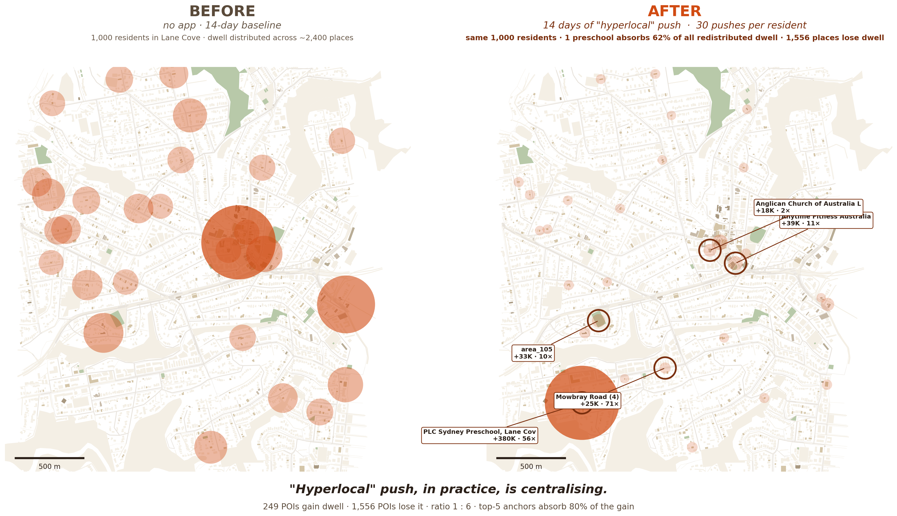
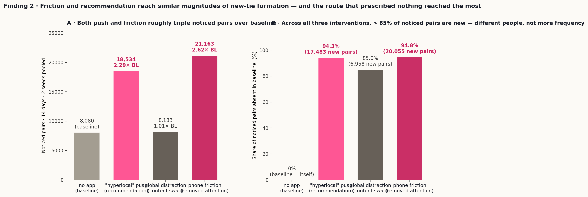
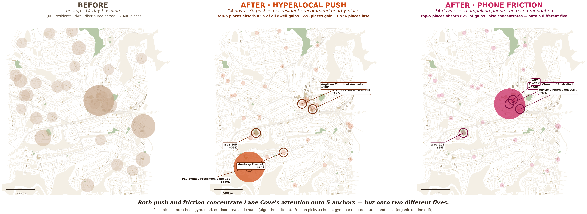
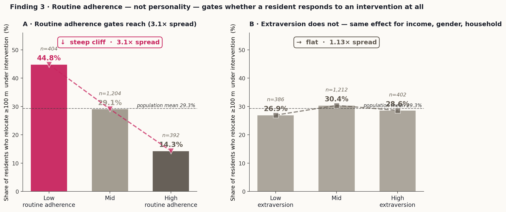
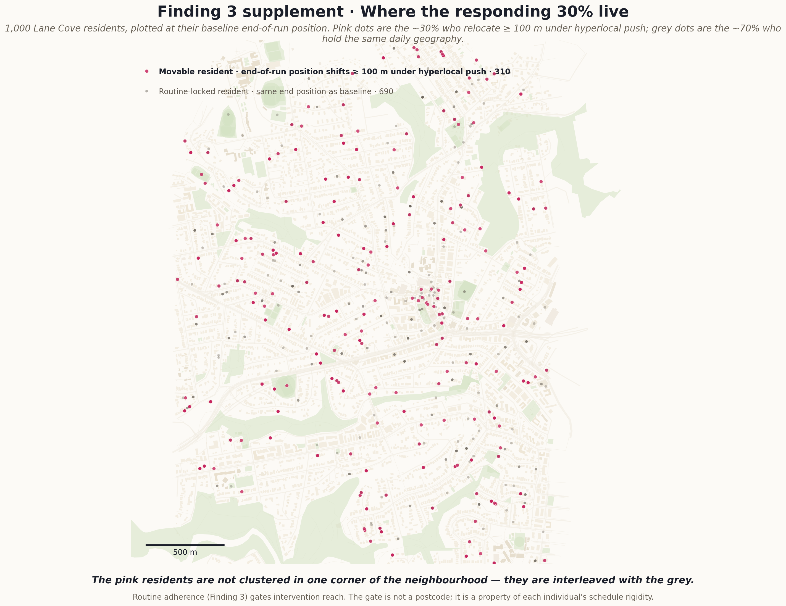
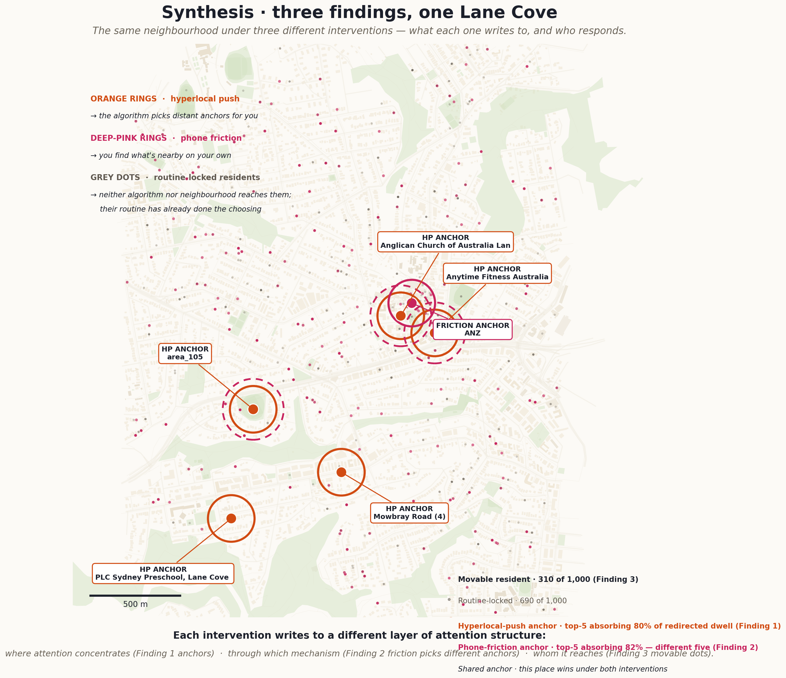

A wind tunnel for attention-mediated urban interventions
One thousand residents, fourteen days, four parallel conditions: hyperlocal push · global distraction · phone friction · no app. A test bed for how attention-mediated interventions reshape who notices whom in Lane Cove.
A push recommender was given three rules — nearby, underused, reachable — and turned loose on a thousand simulated Lane Cove residents for fourteen days. With no information about which places matter to whom, it identified five: a preschool, a church, a gym, a road, an outdoor area. Together they absorbed 80% of all redistributed attention. The recommender-system literature calls this popularity bias; in fully observable conditions it reads as an unsupervised detector of community anchors. Hyperlocal-push condition vs no-app baseline · 1,000 residents · 14 days · seed 43
Cities in the 21st century have a new class of border: ones that do not block the body but block attention. This paper asks what happens when we try to push that attention back.
A neighbour two metres away who is reading a phone is, for the purposes of acknowledgment, in a different city. The smartphone is the most visible instrument of this attention-mediated separation, but the phenomenon precedes any single technology — it sits inside the structure of how attention is solicited and competed for in public space. Empirical observation now confirms what design intuition has suggested for a decade. Hampton, Goulet & Albanesius (2025, PNAS) re-shot William H. Whyte's 1970s public-space footage at major urban sites; the share of pedestrians joining a group has dropped from 5.5% to 2%. Whether this represents a long-run depletion of what Jane Jacobs (1961) called the urban "sidewalk ballet" is a methodological question; that the depletion is measurable is no longer in doubt.
Several intervention archetypes have been proposed to push attention back toward what is physically near. Hyperlocal recommendation apps suggest underused nearby places. Friction-by-design interfaces (greyscale phones, time limits, microboundaries; Cox et al., CHI EA 2016) reduce phone compellingness to release in-person attention. Civic-tech content interventions surface local rather than national stories. Each archetype has been studied at the individual level. The question of how each one reshapes attention at the city-population encounter scale — across thousands of residents over many days, with the social context of every venue and the routine adherence of every resident known to the analyst — has been out of reach of real-world deployment studies.
This paper addresses that question with a fully observable simulation. One thousand residents of a simulated Lane Cove (a Sydney North Shore suburb) live, work, and move for fourteen simulated days, under four parallel conditions: no app (baseline), hyperlocal push, global distraction, and phone friction. Every physical co-presence between residents is recorded and passed through an attention gate that decides whether the encounter registers as noticed. The findings that follow are comparative across these conditions. They ask:
None of the three mechanisms surfaced is novel in isolation. Each finding extends a published literature — recommender-system popularity bias, HCI friction-as-design, habit research on intervention reach. What the fully observable simulation contributes is the ability to read these mechanisms against each other in a single setting, with full social context. The contribution should be read as methodological as much as empirical. The findings are not point estimates of any real neighbourhood's absolute rates; they are comparative shapes that the wind tunnel makes directly visible.
Four literatures converge on the same gap. The paper sits at their intersection.
Jane Jacobs's The Death and Life of Great American Cities (1961) treats sidewalk-level co-presence as the substrate of urban social life — the "sidewalk ballet" that produces familiar strangers, weak ties, and stewardship. Mark Granovetter (1973, AJS) formalised the social-network analogue: novel information and opportunity flow disproportionately through weak ties, making chance public encounters structurally important. Stanley Milgram (1972) named the unit — the familiar stranger — as constituted by observation, repetition, and lack of interaction. The smartphone-era literature documents the mechanism by which this substrate is depleting: Hatuka & Toch (2014) on portable private territories; Hampton et al. (2025, PNAS) on the measurable drop in group-joining behaviour in public space; Misra et al. (2016) on the social-emotional cost of mere phone presence.
Location-based recommender systems have been studied extensively for their tendency to concentrate attention onto popular venues while appearing to diversify individual feeds. Sànchez-Moreno et al. (2022, Data Mining and Knowledge Discovery) characterise four forms of polarisation. Bertelli et al. (2025, Machine Learning) report that recommender systems "consistently increase individual-level diversity in visited venues" but "may simultaneously amplify collective inequality by concentrating visits on a limited subset of popular places." Remediations have been developed (Qin et al. 2023; Klimashevskaia et al. 2024). What this literature has lacked access to is the social context of the venues being concentrated onto. Finding 1 sits in this gap.
Anna Cox et al. (CHI EA 2016) coined the canonical HCI framing for intentional friction as "microboundaries" — small obstacles that disrupt automatic interaction to prompt reflection. Mejtoft, Parsjö & Norlin (2023, ECCE) explicitly contrast friction and nudge as opposite intervention archetypes. The individual-level evidence on friction-by-removal effects is consistent: Hunt et al. (2018, J. Social and Clinical Psychology) reduced platform use to ten minutes per day per platform for three weeks and observed reductions in loneliness and depression; Allcott et al. (2020, NBER w25514) deactivated Facebook accounts for four weeks and observed increased offline socialising. Direct city-population-scale comparison of push and friction archetypes has been absent. Finding 2 sits in this gap.
Wood, Quinn & Kashy (2002, J. Personality and Social Psychology) tracked 209 undergraduates by hourly diary and found 43% of behaviour was repeated daily in the same context. Verplanken & Orbell (2003) operationalised this via the Self-Report Habit Index and observed that habit's automaticity makes it "quite resistant to modification." Hägerstrand's time geography (1970, Papers of the Regional Science Association) provides the geographic mechanism: daily space-time paths are structured by capability, coupling, and authority constraints, leaving a "space-time prism" within which substitution is possible. The digital-intervention engagement literature consistently reports Pareto-shaped response (JMIR 2024 systematic review of mHealth: sustained engagement 0.5–28.6%) without naming the structural predictor. Finding 3 sits in this gap.
This paper does not attempt to resolve any of these four literatures internally. It uses a fully observable simulation to surface the structure each one names from its own angle, in a setting where all four are visible at once.
A fully instrumented simulation of a 1,000-resident Sydney suburb, 14 days, four parallel intervention conditions sharing biographies, routines, and attention gate.
Lane Cove SA2 (Sydney North Shore) is reconstructed from OpenStreetMap geometry at building and outdoor-area resolution: ~5,000 buildings and ~2,400 active points of interest within a 1,000-metre radius of the suburb's community hub. 1,000 simulated residents are populated with full biographies (occupation, household, age, routines, Big Five personality, routine adherence) informed by 2021 Australian Census distributions for this SA2. Each resident's daily plan is generated by a large language model conditioned on the biography, then executed tick-by-tick (one tick = five simulated minutes) by a planner that selects destinations, moves the agent through the atlas, and emits encounter events at every physical co-presence within five metres.
When two residents come within five metres at the same tick, the simulator emits an encounter event for each observer perspective. Each event passes through an attention gate that decides — based on phone-use state, current activity focus, and cognitive load — whether to tag the event as noticed or unnoticed. A pair is mutually noticed when both observers cleared the gate at the same physical co-presence. This paper's primary data unit is the noticed-event subset across all four conditions; comparative findings are computed against it.
The four experimental conditions share the same 1,000 residents, the same biographies, the same routine generation, and the same atlas. They differ only in the intervention applied to phones:
Each condition runs for 14 simulated days at 5-minute tick resolution (4,032 ticks per condition). Two seeds (44 and 45) are run per condition for variance estimation, plus a longer single-seed run (seed 43) used for the position-trace redistribution analysis. The full run produces approximately 700,000 physical encounter events across all four conditions, of which approximately 80,000 clear the attention gate as noticed.
Finding 1 uses hyperlocal-push-vs-baseline dwell-time redistribution across all atlas POIs (seed 43). Finding 2 uses mutually-noticed-pair counts and novelty share across all four conditions (seeds 44 and 45 pooled). Finding 3 uses end-of-day position relocation across baseline vs interventions (seed 43), joined to each resident's traits.
All claims in this paper are comparative — across the four conditions and across structural layers of attention — rather than point estimates of any real neighbourhood's absolute rates. The attention gate's parameters are simulator-designed; absolute notice rates are setting-specific. Direction, ranking, and structural shape of effects are robust within the setting and form the unit of finding throughout.
A small-radius recommender, blind to social meaning, identified Lane Cove's five community anchors. The recommender-system literature reads this as popularity bias; in fully observable conditions it reads as accidental community-anchor detection.
Gainers : losers · 14-day hyperlocal run
The recommender's selection criteria knew nothing about parents, congregants, gym regulars, or weekend joggers; yet the five places it activated are unambiguously this neighbourhood's community anchors. 249 places gain dwell time under the push; 1,556 lose it. The top five jointly absorb 80% of all redistributed dwell. PLC Sydney Preschool alone multiplies its baseline dwell time 56-fold.
1,000 residents · 30 pushes/agent over 14 days · seed 43 · dwell ticks measured as time-on-location · HP vs BL comparison
The term hyperlocal commits to one property: a very small geographical area (Merriam-Webster; first attested 1921, modern sense popularised by the Washington Post, 1989). Its subsequent application across urban governance (Brookings 2020), location-based marketing (typical radius ~300–450 m), and community journalism preserves this commitment. The term does not specify whether attention, once routed to that radius, should disperse across many local destinations or concentrate on a few. The design intuition that hyperlocal interventions should produce diffuse rediscovery of the neighbourhood — the working hypothesis at the start of this study — is added by the designer, not by the word.
The recommender-system literature has long documented that the "concentrate on a few" outcome is the default. Sànchez-Moreno et al. (2022, Data Mining and Knowledge Discovery) characterise four forms of polarisation in location-based recommenders. Bertelli et al. (2025, Machine Learning) conclude that "while recommender systems consistently increase individual-level diversity in visited venues, they may simultaneously amplify collective inequality by concentrating visits on a limited subset of popular places." These studies establish that hub-concentration happens; what they cannot establish, working from Foursquare or Yelp check-in traces, is what the hubs are in any given neighbourhood, or whether the concentration is on places that already matter socially. Real-world venue data lacks the social context.
The simulation places this in a setting where the social context is observable. Under the hyperlocal-push condition — 30 notifications per resident over 14 days, each recommending an underused place within a 1,000-metre radius — dwell time redistributed across Lane Cove's approximately 1,800 active places. 249 places gained dwell; 1,556 lost dwell. The five places absorbing the largest dwell gains were PLC Sydney Preschool (+380,000 dwell ticks, 56× baseline), Mowbray Road segment (+25,000, 71×), Anytime Fitness Australia (+39,000, 11×), area_105 (+33,000, 10×), and the Anglican Church of Australia Lane Cove (+18,000, 2×). They jointly absorbed 80% of all redistributed dwell. Naming the five exposes the result that the published literature has been unable to name: the five are not arbitrary popular venues; they are the community anchors any urban planner familiar with Lane Cove would nominate — a preschool (parents at drop-off and pickup), a church (congregants), a gym (repeat customers), a main road segment (foot-traffic spine), and an outdoor area (weekend joggers). The recommender was given no information about parents, congregants, regulars, or joggers. It found them anyway.

The mechanism is preferential attachment within a constrained candidate set: at any moment only a small number of nearby places satisfy the algorithm's joint criteria; those places win the recommendation; nearby residents converge; over the fourteen days the same small set wins repeatedly. What is novel here is not the mechanism but what the mechanism happens to grip. In a Foursquare-trace study, the same dynamic would produce a list of high-rated cafés and viral bars; in this simulation, where every resident has a full biography and every venue a typed role, it produces the list a planner would draw. Hub-concentration and community-anchor detection are the same effect read under two different lenses. The recommender-system literature has had access only to the first lens. The fully observable simulator makes the second available.
This reframing changes the design implication. The standard recommender-system response to hub-concentration is to install remediation — diversity-aware re-ranking (Sànchez-Moreno et al. 2022), novelty bonuses (Qin et al. 2023, arXiv:2304.07041), popularity-bias correction (Klimashevskaia et al. 2024, User Modeling and User-Adapted Interaction) — on the assumption that the concentrated venues are arbitrary popularity artefacts. If, instead, the concentrated venues are the neighbourhood's community anchors, the remediation suppresses a signal rather than a bias. The decision about whether to remediate is therefore not a technical default but a substantive choice between two design intents: dispersed rediscovery (anti-concentration tools needed) and community-anchor activation (default mechanics suffice). The term hyperlocal, committing only to the small radius, does not say which.
Dwell ticks measured per place per resident per 5-minute tick
from positions.json; baseline (no-app) and
hyperlocal-push runs share the same 1,000 residents, biographies,
and routine generation — only the push condition differs.
Place categorisation joins location_id with atlas
building_type / area_type; top-five
absorbers selected by absolute dwell gain over baseline.
Generator: tools/hero_figure_siphon.py.
Cited literature:
Bertelli et al. 2025, "The urban impact of AI: modelling
feedback loops in location-based recommender systems,"
Machine Learning
(link);
Sànchez-Moreno et al. 2022, "Bias characterization, evaluation,
and mitigation in location-based recommender systems,"
Data Mining and Knowledge Discovery
(link);
Qin et al. 2023, "A Diffusion model for POI recommendation,"
arXiv:2304.07041
(link);
Klimashevskaia et al. 2024, "A survey on popularity bias in
recommendation," User Modeling and User-Adapted Interaction
(link);
Merriam-Webster, "hyperlocal";
Brookings (2020), Hyperlocal: Place Governance in a
Fragmented World.
Two intervention archetypes — recommendation push and attention friction — produced comparable magnitudes of new-tie formation. The intervention that told residents nothing about where to go produced slightly more.
Noticed-pair ratio vs baseline · phone-friction condition
The phone-friction condition (which made smartphones less engaging without recommending any destination) produced 2.62× as many noticed pairs as the no-app baseline. The hyperlocal-push condition (which recommended a nearby underused place 30 times per resident) produced 2.29×. 94.8% of phone- friction's noticed pairs and 94.3% of hyperlocal-push's were pairs that never noticed each other in baseline — different residents, not the same residents noticing each other more often.
BL: 8,080 noticed pairs · HP: 18,534 (94.3% new) · GD: 8,183 (85.0% new) · PF: 21,163 (94.8% new) · seeds 44+45 pooled
HCI design literature distinguishes two intervention archetypes for digital attention. Recommendation push (sometimes called nudge; Caraban et al., CHI 2019, "23 Ways to Nudge") adds prescriptions: notifications, suggestions, prompts designed to "invoke automatic behavior and quickly guide users towards helpful decisions" (Mejtoft, Parsjö & Norlin 2023, ECCE). Attention friction — formalised by Cox et al. (CHI EA 2016) as "microboundaries" and developed in Cho et al. (CHI 2024, "A Longitudinal In-the-Wild Investigation of Design Frictions to Prevent Smartphone Overuse") — subtracts engagement: it adds small obstacles to phone use so that users "reflect" rather than act automatically. The two archetypes operate through opposite mechanics. Both have been studied at the individual level. They have not, to our knowledge, been directly compared at the city-population encounter level.
The relevant individual-level evidence is consistent. Hunt et al. (2018, J. Social and Clinical Psychology) found that capping Facebook, Instagram and Snapchat use to ten minutes per platform per day for three weeks reduced loneliness and depression. Allcott et al. (2020, NBER w25514) deactivated 2,743 Facebook accounts for four weeks and reported that deactivation "increased offline activities such as watching TV alone and socializing with family and friends." Hampton et al. (2025, PNAS) re-shot William H. Whyte's 1970s footage in public spaces and found the share of pedestrians joining a group had fallen from 5.5% to 2%. The friction lens predicts that removing phone competition for attention should release dormant capacity for in-person encounters in public space. What it has not been able to test is whether that release matches, exceeds, or falls short of an active push intervention deployed in the same setting.


The simulation result extends the friction-lens prediction from the individual level (Hunt 2018; Allcott 2020) to the city-population encounter level: removing phone attention is sufficient to produce as many novel-pair noticed encounters in Lane Cove as actively recommending nearby destinations to every resident. The recommendation lens is not redundant. The geographic comparison (Figure 2B) shows that both interventions concentrate dwell time onto a small set of anchors — top five places absorb 83% of dwell gains under hyperlocal push and 82% under phone friction — but onto two different sets. The two five-anchor sets overlap on three places — a gym, an outdoor area, and the Anglican Church — but diverge on the other two. Hyperlocal push uniquely activates a preschool (PLC Sydney) and a road segment (Mowbray Road) — anchors selected by the algorithm's "underused + reachable + appealing" criteria. phone friction uniquely activates a park (Longueville Park) and a bank (ANZ) — anchors that residents drift toward organically once phone competition for attention is reduced. The two routes converge to similar magnitudes of new-tie formation but expose different latent anchor structures. The global-distraction condition, which neither prescribes nor removes attention but substitutes phone content, produces no change in noticed-pair count, yet 85% of its noticed pairs are still new pairs. Same number, different residents. Global distraction produces neither physical concentration nor a comparable lift in new pair formation; it accomplishes, perfectly and silently, the extraction of local attention — without leaving a footprint in either the dwell map or the noticed-pair count. This "silent content swap" is a third intervention archetype that has no obvious name in the design literature; the data here surface it as a distinct pattern.
The design implication is that the choice between push-based and friction-based interventions for in-person social outcomes is not a choice between effective and ineffective, but between two different mechanisms producing comparable outcomes through opposite means. A recommendation push commits a designer to curating and ranking destinations, accepting hub-concentration onto whichever places the recommender picks (Finding 1). A friction intervention commits a designer to reducing the attention infrastructure of a platform, accepting that the resulting in-person encounters cannot be steered. Neither is free; the costs are different in kind. The contribution of the fully observable simulation is that it makes the magnitudes directly comparable in a setting where the underlying encounter stream is recorded with the same instruments under all conditions.
Noticed pairs counted at the unique-pair level over the full
14-day window, deduplicated on sorted (agent_a, agent_b).
Novelty share computed as pairs not appearing in baseline ÷
total pairs in that condition. Both seeds 44 and 45 pooled.
Generator: tools/h17_h19_noticed_redo.py (analysis)
+ tools/f2_friction_figure.py (figure).
Cited literature:
Cox, Gould, Cecchinato, Iacovides & Renfree 2016, "Design
Frictions for Mindful Interactions: The Case for
Microboundaries," CHI EA
(link);
Mejtoft, Parsjö & Norlin 2023, "Design Friction and Digital
Nudging," ECCE
(link);
Cho et al. 2024, "A Longitudinal In-the-Wild Investigation of
Design Frictions to Prevent Smartphone Overuse," CHI
(link);
Hunt, Marx, Lipson & Young 2018, "No More FOMO,"
J. Social and Clinical Psychology
(link);
Allcott, Braghieri, Eichmeyer & Gentzkow 2020, "The Welfare
Effects of Social Media," NBER w25514
(link);
Hampton, Goulet & Albanesius 2025, "Exploring the social
life of urban spaces through AI," PNAS
(link);
Caraban et al. 2019, "23 Ways to Nudge," CHI.
Across all three interventions, the responding fraction of the population was the same — about a third. Routine adherence accounted for the variance; extraversion, income, age, gender, and household composition did not.
Movability spread · low vs high routine adherence
Of 1,000 simulated residents, 29.4% relocated at least 100 metres from their baseline end-position under at least one intervention (the "movable" fraction). The fraction ranges from 44.8% among residents with low routine adherence to 14.3% among those with high routine adherence — a 3.1× spread. Equivalent splits by extraversion (1.13× spread), income, household, gender, and age range produced no comparable gradient.
Movability defined as ≥100 m relocation of end-of-day position under any of HP / GD / PF vs baseline · seed 43 · 1,000 residents
Habit research has long established two things about behavioural change. The first: a substantial share of daily behaviour is habitual. Wood, Quinn & Kashy (2002, J. Personality and Social Psychology) tracked 209 undergraduates by hourly diary and found 43% of behaviours were performed almost daily in the same context; Neal, Wood & Quinn (2006, Current Directions in Psychological Science) replicated the figure at ~45%. The second: high-habit-strength individuals are empirically resistant to interventions. Verplanken & Orbell (2003, J. Applied Social Psychology) operationalised this with the Self-Report Habit Index and observed that "the automatic features of the habit construct make it quite resistant to modification." Wood & Neal (2007, Psychological Review) trace the mechanism: context-cue associations, once laid down, do not update in response to one-shot interventions.
The digital intervention literature reports a structurally compatible pattern: only a minority of an addressed population engages. A 2024 JMIR systematic review of mHealth interventions for chronic conditions found "sustained engagement" between 0.5% and 28.6% across studies; a 2025 npj Digital Medicine meta-analysis of 92 mental-health-app trials shows steep engagement decay across every persuasive-design category. The Nielsen Norman Group's "90-9-1" rule and Pareto-shaped engagement curves across product analytics describe the same shape from a different angle. What none of these findings name precisely is the structural predictor of who responds and who does not. Personality is the obvious candidate but is empirically weak; demographics (age, income, gender) are weaker still.


=100m) interleaved with 690 grey (locked, same end position)." style="display:block; width:100%; height:auto;">Hägerstrand's time geography (1970, Papers of the Regional Science Association) provides the geographic mechanism. Daily space-time paths are constrained by capability (biological — sleep, movement), coupling (must be co-present with others — work, school, family), and authority (rules — work hours, store hours). The residual discretionary window between fixed anchors is the "space-time prism" within which an individual can substitute one activity for another. A resident with dense coupling and authority anchors — and, correspondingly, high routine adherence — has a small prism: physically less room to relocate even if a push is received. The habit-research finding (Wood et al.) and the time-geography finding (Hägerstrand) name the same structural constraint from two disciplines. The simulation identifies it as the primary gatekeeper of reach in attention- mediated urban interventions.
Two design implications follow. First, the effective denominator for any attention-mediated intervention is not the addressed population (1,000 residents in this study) but the responding fraction (~30%). Reach KPIs computed against the addressed population overstate effect size by a factor of roughly three and obscure the structural gating. Second, the routine-adherence gradient is itself a design lever. Interventions that target residents within their existing routine anchors (the school gate, the church pew, the morning commute) operate on a different constraint than interventions that require relocation outside the routine. The wind tunnel suggests that the latter will, by default, reach only the third of the population whose routine is loose enough to relocate.
Movability defined as Euclidean distance ≥ 100 metres between
an individual's baseline end-of-day position and the
corresponding end-of-day position under any of the three
intervention conditions (HP, GD, PF). Routine adherence is a
simulator-assigned trait scored 0–1 governing the rigidity of
each resident's generated daily schedule (low < 0.33,
high > 0.67). Analysis covers seed 43 and 1,000 residents.
Generators: tools/n4_movable_profile.py (analysis)
+ tools/f3_reach_figure.py (figure).
Cited literature:
Wood, Quinn & Kashy 2002, "Habits in Everyday Life,"
J. Personality and Social Psychology
(PDF);
Neal, Wood & Quinn 2006, "Habits — A Repeat Performance,"
Current Directions in Psychological Science
(link);
Verplanken & Orbell 2003, "Reflections on Past Behavior:
A Self-Report Index of Habit Strength,"
J. Applied Social Psychology
(link);
Wood & Neal 2007, "A New Look at Habits and the
Habit–Goal Interface," Psychological Review
(PDF);
Hägerstrand 1970, "What about people in regional science?"
Papers of the Regional Science Association
(link);
2024 JMIR systematic review of mHealth engagement (e50508)
(link).
Across the three findings, each intervention archetype rewrites a different layer of attention structure. The choice between them is not a choice of strength; it is a choice of what to rewrite.

The three findings together describe three different forms of surgery on the same neighbourhood. Hyperlocal push acts on where attention concentrates: a 1,000-metre-radius recommender, operating on three abstract criteria, identifies and amplifies a small set of community anchors — accidentally functioning as an automated detector of the places the neighbourhood already gathers (Finding 1). Phone friction acts on how much attention is competing: reducing smartphone engagement releases capacity for in-person encounters, producing a magnitude of new-tie formation comparable to active recommendation without prescribing any destination (Finding 2). Reach, the cross-cutting constraint, acts on whom any intervention can touch at all: only about a third of residents respond to attention-mediated interventions in this setting, and that third is selected by routine adherence rather than by personality, income, age, gender, or household composition (Finding 3).
None of the three findings is novel in isolation. Hub-concentration in location-based recommendation is documented in recommender-system literature (Bertelli et al. 2025; Sànchez-Moreno et al. 2022). The contrast between push (nudge) and friction as design archetypes is formalised in HCI (Cox et al. 2016; Mejtoft et al. 2023), and the individual-level effects of attention reduction are documented in social-media-cessation studies (Hunt et al. 2018; Allcott et al. 2020). Pareto-shaped engagement in digital interventions is reported across mHealth systematic reviews, and habit research has long named habit strength as the structural barrier to behaviour change (Verplanken & Orbell 2003; Wood & Neal 2007). What the fully observable simulation contributes is the ability to read all three mechanisms against each other in a setting where the social context of every venue and the routine adherence of every agent is known — making it possible to name the specific anchors that absorb the concentration, to compare the magnitudes of push and friction at the same encounter scale, and to identify routine adherence as the responsible variable where personality is not.
The design-diagnostic frame that follows is direct. An intervention claim of the form "this improves nearby awareness" is, on the evidence here, under-specified. The same claim can describe a recommendation push that concentrates attention onto five community anchors (gaining 80% of redistributed dwell at those anchors, losing dwell at 1,556 other places); a friction intervention that produces 20,000 new noticed pairs across the population without selecting any destination; or a content swap that holds aggregate counts constant while replacing 85% of the pairs underneath. All three would register positive on a coarse aggregate KPI; none of the three describes the same outcome. The diagnostic question is which layer the designer intends to rewrite — concentration, competition, or reach — and which cost the designer is willing to accept.
What the fully observable simulator contributes is a method, not new mechanisms. The same diagnostic frame applies wherever attention mediates between presence and recognition — algorithmic feeds, search, recommendation, public space.
The simulator's contribution across the three findings has a consistent shape. Each finding corroborates a mechanism already documented in a published literature — hub-concentration in recommender systems, friction-as-design in HCI, routine-strength as habit-research's predictor of intervention resistance — and adds what the corresponding real-world studies cannot easily provide: the social context of the venues being concentrated onto (Finding 1), a direct city-scale comparison of intervention archetypes addressed to the same population (Finding 2), and structural identification of which residents respond and why (Finding 3). The fully observable setting trades absolute ground-truth calibration (the simulator's attention parameters are not derived from human eye-tracking data) for full observability of mechanism and context. The findings should be read as comparative — across conditions, across structural layers — rather than as point estimates of any real neighbourhood's behaviour.
The diagnostic frame generalises to other settings in which attention mediates between presence and recognition. Algorithmic feeds exhibit the same hub-concentration default (popularity bias) that Finding 1 documents; the literature's response (diversity-aware re-ranking, novelty bonuses, popularity-bias correction) is the same set of remediations. Friction-as-design and push-as-design exist as parallel archetypes in search-interface and recommendation-system design; the trade-offs Finding 2 surfaces — prescription cost vs unsteered outcome — apply identically. Routine-gated reach is the structural shape of engagement in mobile-health apps, civic-tech tools, public-health messaging, and political mobilisation; the variable Finding 3 names (habit strength, operationalised through routine adherence) is the same variable Verplanken & Orbell (2003) identified two decades ago and that mHealth meta-analyses continue to under-name.
The limitation is that the wind tunnel does not replace empirical field studies; it sequences them. Where a field study would observe a recommendation system in deployment and report that hub-concentration occurred, the simulator can ask the question in reverse — given a candidate intervention design, which layer of attention structure will it most likely rewrite, what cost will that rewrite carry, and which fraction of the population will it reach? The answers do not substitute for deployment, but they reframe what the deployment should measure. For an attention-mediated urban intervention, the relevant measurement is not "did awareness improve" but "which layer did it rewrite, at what concentration cost, with what routine-gated reach." That reframing is the methodological contribution this paper carries forward.